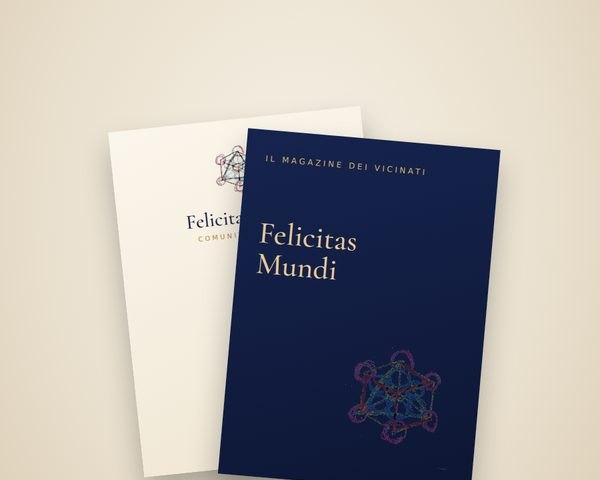
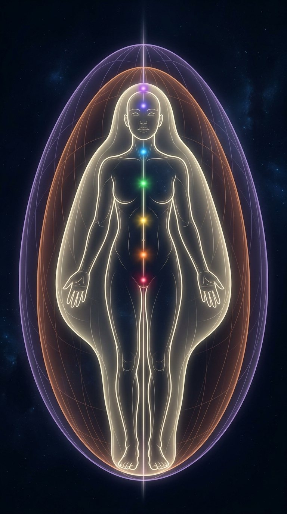

FELICITASMUNDIEmporio

ACQUA · EMPORIO
Emporio
quello che si compra, si scambia e si dona, e chi lo porta
tuttialimentirimedicosmesioggettisticaabbigliamentoarredooggetti sacrilibri e stampatidigitale
LIBRI E STAMPATItutti ›
STRUMENTI DI COSCIENZA
+
Il tuo prodottoOgni prodotto ha il QR code di Felicitas con la storia del produttore.
I GRUPPI D'ACQUISTO
Le promozioni dei gruppi d'acquisto: comprare insieme.
SI SCAMBIA · SI DONA
○
[ qui non c'è ancora niente ]Quando qualcuno mette una cosa in scambio o in dono, compare qui.

FUOCO · MUTUO AIUTO
Mutuo aiuto
chi risponde a un bisogno: spiritualità, trattamenti, consulenze, mutuo aiuto
tuttispiritualeterapeuticoconsulenzepercorsi
SPIRITUALE · I PERCORSI
Con i devoti dell'USCI. In dono, a distanza.
TERAPEUTICO · CONSULENZE
○
[ qui non c'è ancora niente ]Gli operatori presentano i loro trattamenti e percorsi.
UNA CHAT COL COORDINAMENTO
Chi si propone per un vicinato scrive qui: una chat ad hoc, tu e chi coordina il villaggio.

ARIA · EDIZIONE
Edizione
le opere, la radio, e quello che si stampa e si distribuisce
LA RADIOin Bacheca ›
▶
Strumenti per fare ordine.puntata · Discernimento · ogni lunedì in diretta alle 19, con Gabriele Dettori
PrenotaLE OPERE
+
[ nessuna opera ancora ]Scrivi un racconto in Bacheca: quando pubblichi, «Vuoi stamparlo?» porta qui.
STAMPA · E TI ARRIVA A CASAtutti ›
Oltre alla stampa proponiamo supporti per l'esposizione fieristica e altri prodotti utili alla comunicazione. Scegli la famiglia, poi il formato, la carta e quante copie.
Agende e calendariagende, calendari, quaderni e taccuini
Esposizione e fieretotem, roll-up, striscioni, stand, insegne, pellicole per vetrine
Confezioni e imballaggishopper, imballaggi, bicchieri, tovaglioli, confezioni regalo
Gadget e regalipenne, cordini, portabadge, borse, borracce
I servizigrafica, impaginazione, correzione, consegna

ETERE · SCUOLA
Scuola
le lezioni, le formazioni, e la ricerca che le accompagna
tuttelezionionlinericerca
IL PRATICANTATOche cos'è ›

LE LEZIONI
○
[ nessuna classe ancora ]Una diretta può essere una puntata o una lezione a pagamento: si apre da «Cosa stai facendo?».

bozza · le quattro stanze — righe delle stanze dalla tavola «stanze» (verbatim); prodotti, servizi, classi e opere dal database (3 prodotti, 5 percorsi USCI, 0 classi, 0 opere pubblicate); «La scelta antitumore» e il Kit fiera come nella casa (10 ott). «Assistenza» qui si chiama Mutuo aiuto: nel database la stanza e i tipi dei servizi si chiamano ancora «assistenza» — da riallineare quando decidi. Carrello, paniere e configuratore: pagine a parte (punto 5).